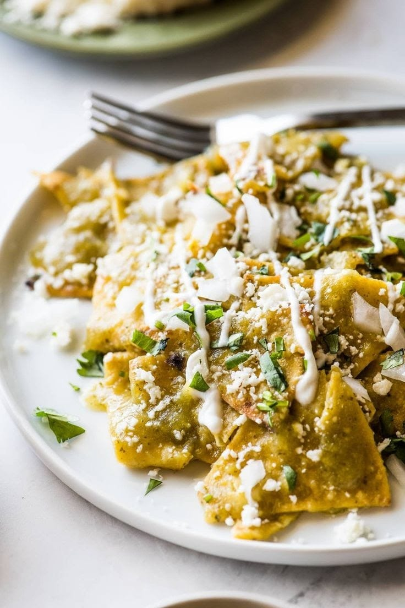
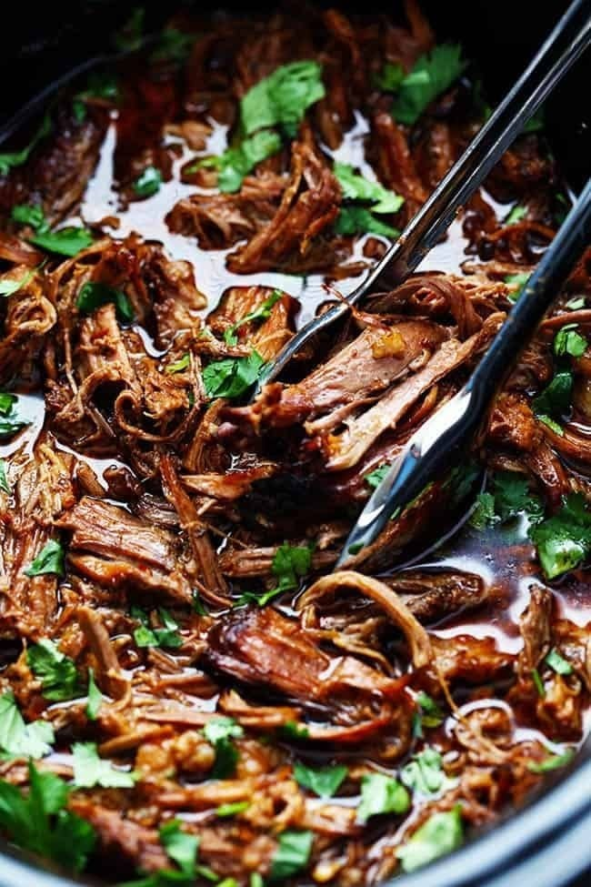
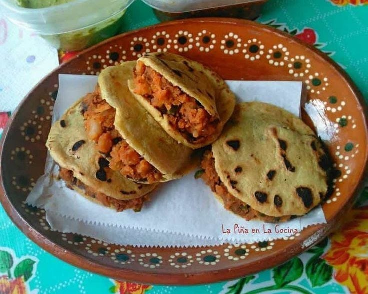
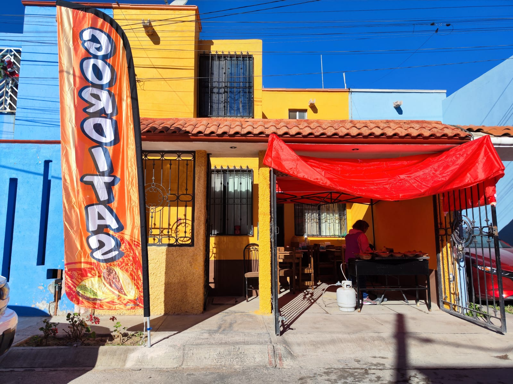

¿QUIENES SOMOS?
Somos un emprendimiento familiar con el gusto especial por la cocina mexicana. Nuestra especialidad es la rica barbacoa, las gorditas y el menudo, aqui encontraras ricas opciones para desayunar los domingos apartir de las 8:00 am a las 13:00 pm, ¡TE ESPERAMOS!
RICOS DESAYUNOS
Si los domingos no quieres cocinar, a nosotros nos debes contactar.

¡QUE RICO ESTA!
Aqui encontraras amplias y deliciosas opciones para desayunar tenemos para todos los gustos.

DELICIAS POTOSINAS.
Estos desayunos pertenecen al menu exquisito de la tipica comida mexicana, para ser mas exactos, de la region potosina.

¿DONDE NOS ENCUENTRAS?
Ven a visitarnos y dale el visto bueno a la variedad de desayunos que ya nos caracterizan.
Estamos ubicados en Obispo Pedro Barajas #101 col. Obispado

GORDITAS
Tenemos de:
Chicharron, deshebrada, picadillo, salchicha, rajas con o sin queso, papas, bisteck, barbacoa, cecina, huevo verde, huevo rojo, frojoles con queso, nopales en salsa roja, nopales con papas.
Su costo es de $15 pesos.
Sope sencillo $20 Sope con guisado $30
DESAYUNOS
Chilaquiles sencillos $100, Chilaquiles con cecina $120, Orden de barbacoa $120, Plato de menudo $120.